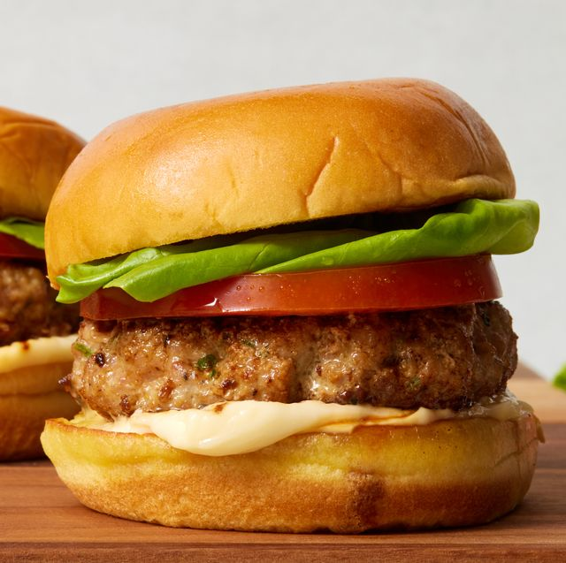

Burger

This burger recipe is as close as can be to the iconic five guys burger,
this recipes will allow you to create the nation's favourite burger at the convenience of
your own home.
Ingredients
- 2 Medium russet potatoes
- 8 cups peanut oil for frying
- 14 ounces ground chuck
- 4 thick slices American cheese
- 1 teaspoon hot sauce
- 1 tablespoon mayonnaise
- 2 medium sesame seed burger buns
- half cup shredded iceberg lettuce
- 2 thick slices tomato
- 2 tablespoons diced onion
- tablespoon pickle slices
- 1 teaspoon mustard
- 2 tablespoons ketchup
- 1 teaspoon kosher salt
- Cut potatoes in 1/2 inch wide strips. Place in a large bowl filled with
warm water and soak for 20 minutes.
- Pour oil in an oven and heat over medium high heat until it reaches
350 degrees. Line a rimmed baking sheet with paper towels and set a wire rack on top
- Drain potatoes well and dry thoroughly with paper towls. Add 1/2
of the dried potatoes to the hot oil and cook, stirring often, untilthey soften
slightly. remove potatoes to the wire and drain.